Addis Ababa
Cometas · Técnica Mista
2,00 m × 1,10 m · Total: 11,00 m²
Materiais
Tinta-da-china · Seda · Papel Craft · Papel Batik · Papéis Metalizados (Cobre, Ouro, Pérola) · Bambu · Acrílicos · Cartapesta · Lona Crua · Fios de Algodão
€ 1.500
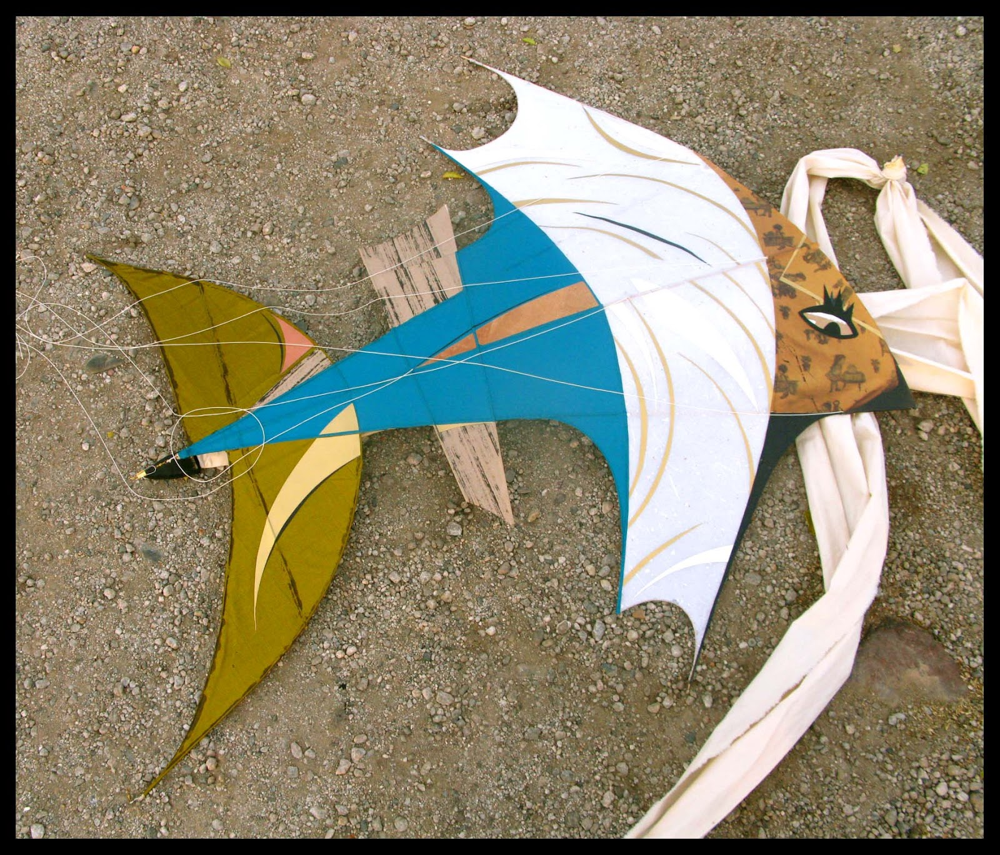
Fabio Crisanti é artista plástico e fotógrafo nascido em Buenos Aires, Argentina, em 1968. Sua trajetória criativa começa em 1988, revelando desde cedo uma habilidade singular para transitar entre linguagens — da fotografia à escultura, das pipas às instalações de grande formato.
Radicado no Brasil — atualmente na Bahia — depois de um longo percurso que atravessou Argentina, Uruguai (onde inaugurou a Photogalerie Fabio Crisanti, em Colônia do Sacramento), França e Santa Catarina, o artista carrega em sua obra a marca desse trânsito: territórios, exílios e escalas que se traduzem em superfície, textura e cor.
Seu trabalho une técnicas mistas — papel kraft, seda, tinta-da-china, papéis metalizados, bambu, linho, papelão, fotografia, acrílicos — em composições que evocam tanto a leveza aérea das cometas (pipas de grande formato) quanto a densidade tátil de objetos arqueológicos. A memória, a paisagem e os processos orgânicos da matéria são fios condutores de toda a produção.
Além das artes plásticas, Crisanti atuou como diretor de fotografia no cinema e na televisão, ilustrador editorial e curador. Uma obra plural, que recusa fronteiras.
Uma seleção de peças originais em técnica mista — cada uma, única.
Cometas · Técnica Mista
2,00 m × 1,10 m · Total: 11,00 m²
Tinta-da-china · Seda · Papel Craft · Papel Batik · Papéis Metalizados (Cobre, Ouro, Pérola) · Bambu · Acrílicos · Cartapesta · Lona Crua · Fios de Algodão
€ 1.500
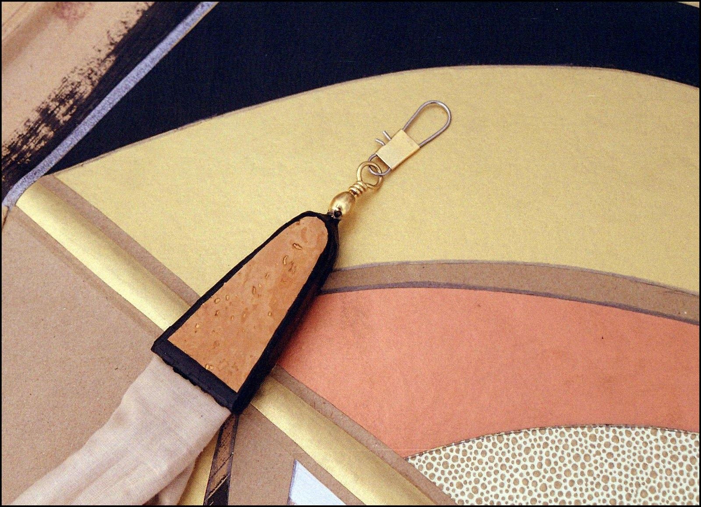
Cometas · Técnica Mista
2,05 m × 1,15 m · Total: 11,50 m²
Bambu · Papel Craft · Cortiça · Cartapesta · Tinta-da-china · Papéis Metalizados (Ouro, Cobre) · Linho · Fios de Algodão
€ 1.100

Cometas · Técnica Mista
2,08 m × 1,25 m · Total: 9,50 m²
Bambu · Cartapesta · Tinta-da-china · Papéis Metalizados (Cobre, Ouro) · Linho · Fios de Algodão
€ 850
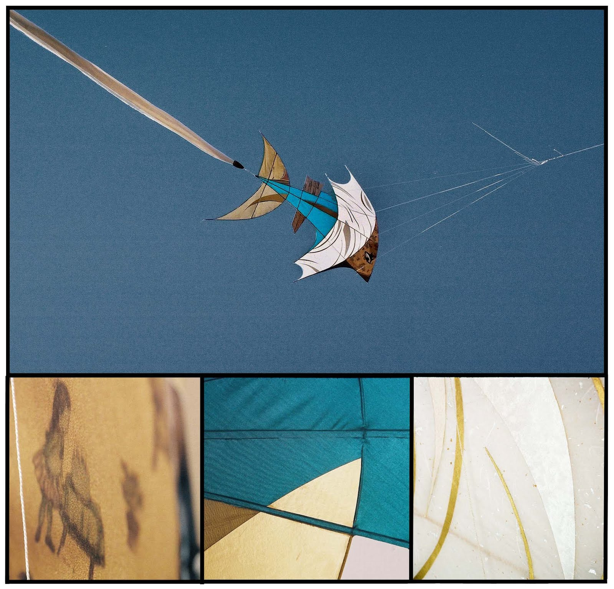
Objetos · Técnica Mista
1,20 m × 1,20 m · Total: 8,43 m²
Papel Kraft · Tinta-da-china · Papéis Metalizados (Pérola, Ouro, Cobre) · Tecidos Resinados · Cetim · Papel de Cortiça · Papel Fotográfico ("Exílio II", Buenos Aires 1999) · Bambu · Lona Crua · Acrílicos · Papel de Seda · Papel de Arroz
U$S 700
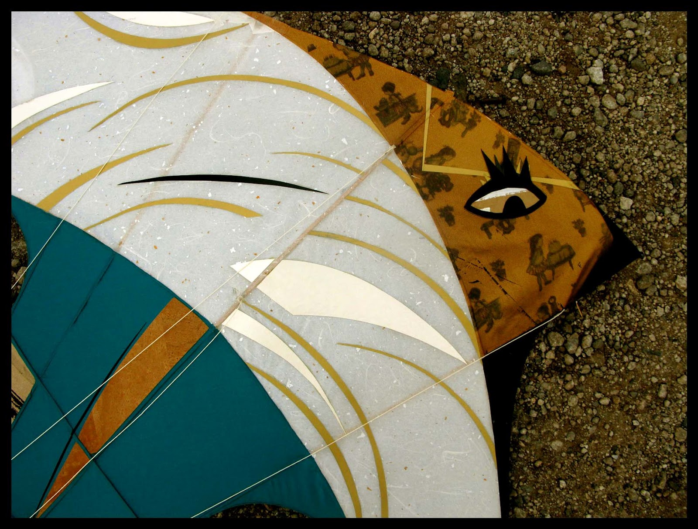
Objetos · Técnica Mista
1,20 m × 1,20 m
Bambu · Lona Crua · Papel de Seda · Papel de Arroz · Acrílicos
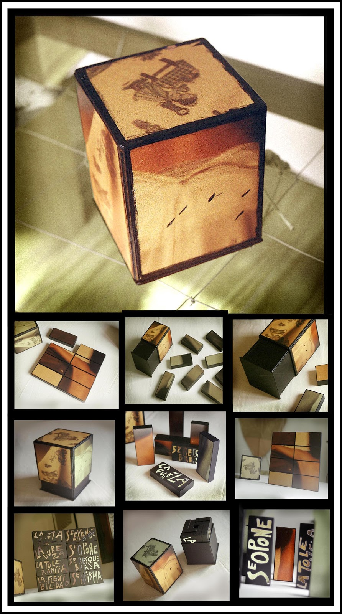
Objetos · Edição 1/20
15 cm × 15 cm × 16,5 cm
Papelão · Acrílicos · Fotografia · Madeira
U$S 120
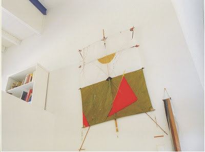
Cometas · Objetos Únicos
Formato variável
Fabricadas no Uruguai, combinam bambu, tecidos sintéticos, papéis, fios e tintas. Cada peça é única — algumas inspiradas em designs tradicionais da Oceania, Japão, China e Américas; outras de inspiração pessoal. Apreciadas por colecionadores de arte pelo mundo.
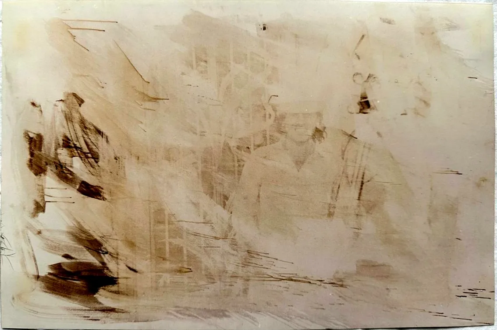
Fotografia · Série Histórica
140 cm × 200 cm · 1995 · Buenos Aires, Argentina
Fotografia em superfícies sensibilizadas — técnica experimental que explora a fluidez da luz como matéria orgânica. Primeira série fotográfica do artista, exibida em Viña del Mar, Chile, em 1994.
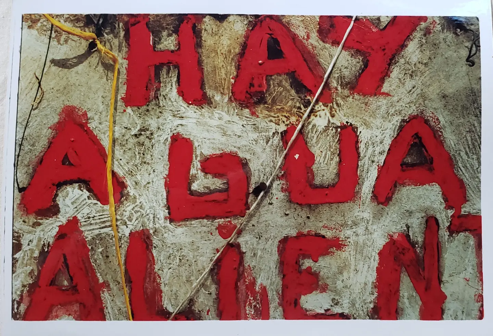
Fotografia · Série Cotidiano
Toma Directa 35mm · 2004 · Colonia del Sacramento, Uruguai
A série Cotidiano captura momentos do dia a dia em Colônia do Sacramento e cidades do Rio da Prata. Exibida em galerias da Argentina e Uruguai entre 2004 e 2006.
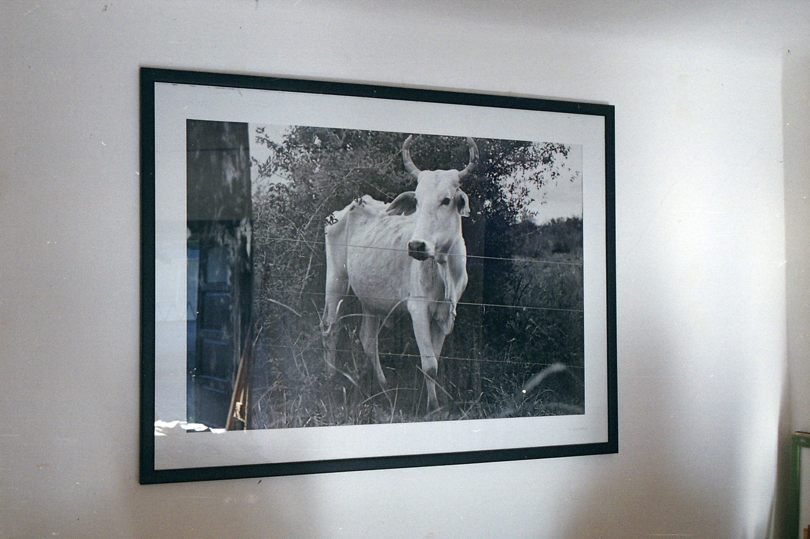
Fotografia · 35mm Toma Directa
70 cm × 100 cm · 2010 · Colonia, Uruguai
Fotografia da Photogalerie Fabio Crisanti, galeria inaugurada pelo artista em Colônia do Sacramento em 2006. Espaço de exposição e criação fotográfica.
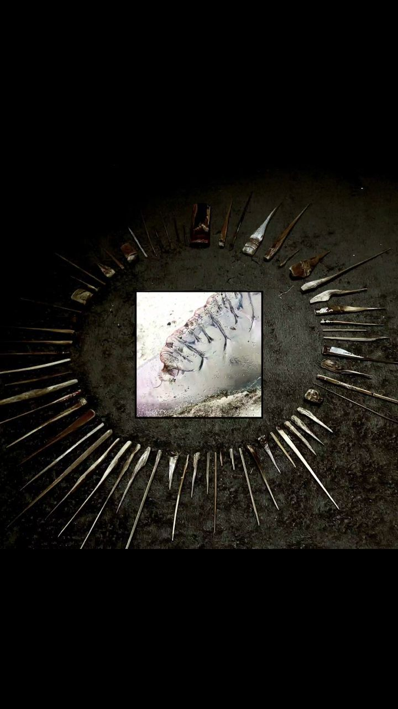
Fotografia · Digital Celular
1166 × 1166 pixels · 2023
Fotografia e edição digital com celular. Parte da série contemporânea de imagens cotidianas do processo criativo — bambu, material estrutural das cometas.
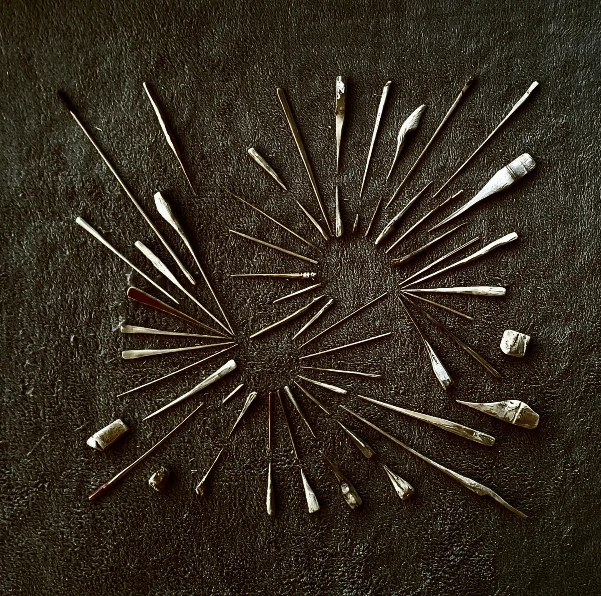
Fotografia · Digital Celular
1166 × 1166 pixels · 2023
Fotografia e edição digital com celular. Continuação da série de registros do processo criativo.
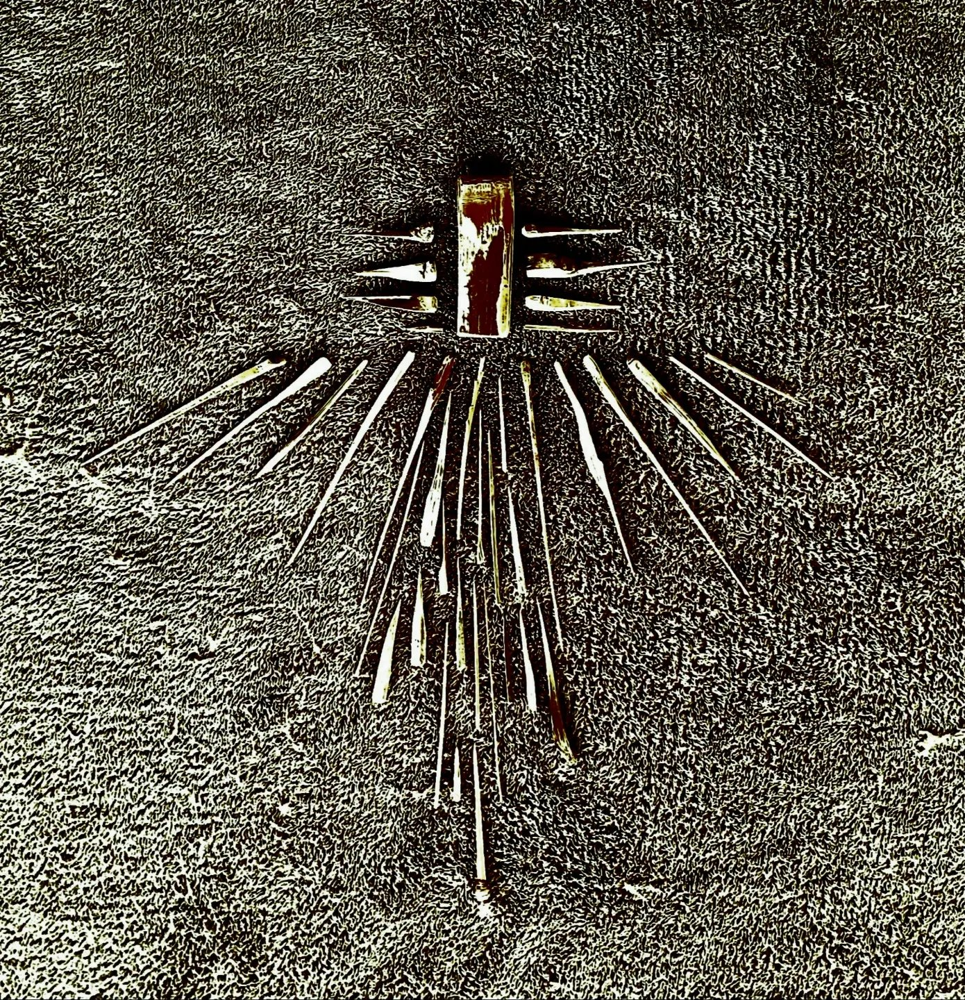
Fotografia · Digital Celular
1166 × 1166 pixels · 2023
Fotografia e edição digital com celular. Terceira imagem da série contemporânea de registros do ateliê.
Em Seda, Fabio Crisanti volta a explorar a dialética entre arte contemporânea e tradição, entre origem e originalidade. Pinturas, croquis, cadernos pessoais, pequenas ferramentas e pipas convivem como documentos de um processo.
O artista abre e expõe seus procedimentos, técnicas e materiais — trabalhando com lavagens acrílicas em papéis industriais muito finos chamados "papéis de pipa".
Uma paleta de cores metálicas e "indefinidas" evoca os tons dados pelos sais de prata nos processos de revelação fotográfica — referência não casual à memória e à fixação de imagens que constroem tradição.
As texturas de pedras e cascas, com suas rachaduras, fissuras e traços, convidam a sentir a dimensão mais intimamente sensorial dos processos de memória incorporados na matéria orgânica.
Exposição Seda 2021 — Galeria 33
Todo o acervo do artista — obras, processos, bastidores e exposições.
Para aquisições, permutas, exposições ou qualquer conversa sobre a obra, entre em contato pelo Instagram ou pelo blog de catálogo.